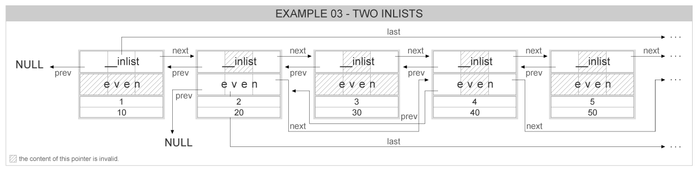

|
Tizen Native API
4.0
|
This example describes the usage of multiple inlists storing the same data. It means that some data may appear in more than one inlist at the same time. We will demonstrate this by creating an inlist with 100 numbers, and adding the odd numbers to the second inlist, then remove the numbers divisible by 3 from the second list.
To accomplish this, it is necessary to have two inlist pointers in the struct that is going to be stored. We are using the default inlist member EINA_INLIST, and adding another member even that is of type Eina_Inlist too:
struct my_struct { EINA_INLIST; Eina_Inlist even; int a, b; };
The representation for this struct is:
And we will define some convenience macros that are equivalent to EINA_INLIST_GET and EINA_INLIST_CONTAINER_GET :
#define EVEN_INLIST_GET(Inlist) (& ((Inlist)->even)) #define EVEN_INLIST_CONTAINER_GET(ptr, type) \ ((type *)((char *)ptr - offsetof(type, even)))
We need two pointers, one for each list, and a pointer that will be used as an iterator:
Eina_Inlist *list = NULL, *list_even = NULL, *itr;
Now we allocate and add to the first list every number from 0 to 99. These nodes data also have the Eina_Inlist node info for the second list (even). We will use them to add just the even numbers to the second list, the list_even. Also notice that we are using our macro EVEN_INLIST_GET to get the pointer to the even list node info:
for (i = 0; i < 100; i++) { d = malloc(sizeof(*d)); d->a = i; d->b = i * 10; list = eina_inlist_append(list, EINA_INLIST_GET(d)); if ((i % 2) == 0) list_even = eina_inlist_prepend(list_even, EVEN_INLIST_GET(d)); }
And the resulting lists will be as follow:
For the first list, we can use the macro EINA_INLIST_FOREACH to iterate over its elements:
EINA_INLIST_FOREACH(list, cur) printf("\ta=%d, b=%d\n", cur->a, cur->b);
But for the second list, we have to do it manually. Of course we could create a similar macro to EINA_INLIST_FOREACH, but since this macro is more complex than the other two and we are using it only once, it's better to just do it manually:
for (itr = list_even; itr != NULL; itr = itr->next) { cur = EVEN_INLIST_CONTAINER_GET(itr, struct my_struct); printf("\ta=%d, b=%d\n", cur->a, cur->b); }
Let's just check that the two lists have the expected number of elements:
printf("list count=%d\n", eina_inlist_count(list)); printf("list_even count=%d\n\n", eina_inlist_count(list_even));
And removing the numbers divisible by 3 only from the second list:
itr = list_even; while (itr) { Eina_Inlist *next = itr->next; cur = EVEN_INLIST_CONTAINER_GET(itr, struct my_struct); if ((cur->a % 3) == 0) list_even = eina_inlist_remove(list_even, itr); itr = next; } printf("list count=%d\n", eina_inlist_count(list)); printf("list_even count=%d\n\n", eina_inlist_count(list_even));
Now that we don't need the two lists anymore, we can just free all the items. Since all of the allocated data was put into the first list, and both lists are made of pointers to inside the data structures, we can free only the first list (that contains all the elements) and the second list will be gone with it:
while (list) { struct my_struct *aux = EINA_INLIST_CONTAINER_GET(list, struct my_struct); list = eina_inlist_remove(list, list); free(aux);
To see the full source code for this example, click here: eina_inlist_03.c Eina_Inlist advanced usage - multi-inlists source